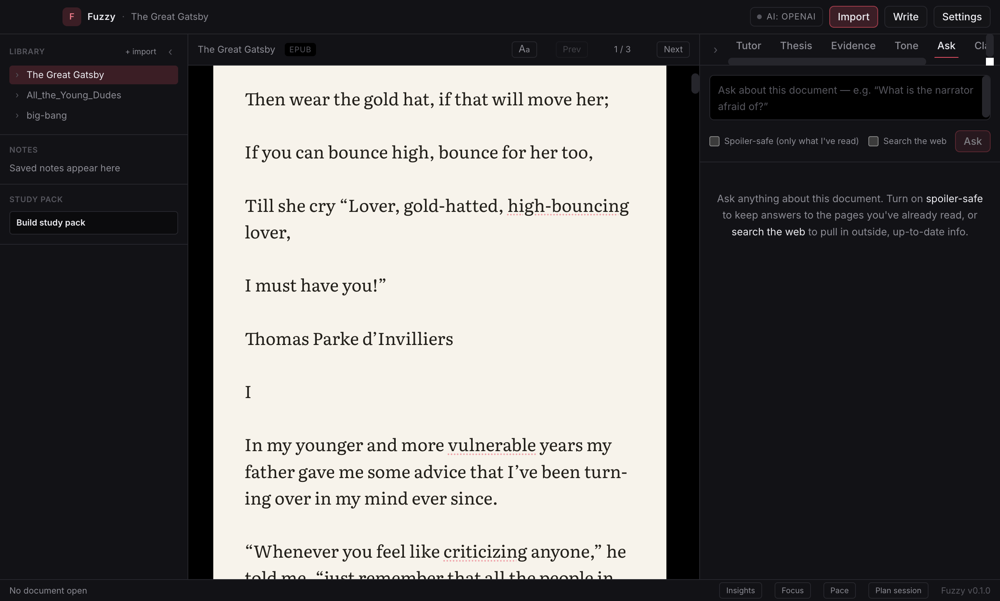
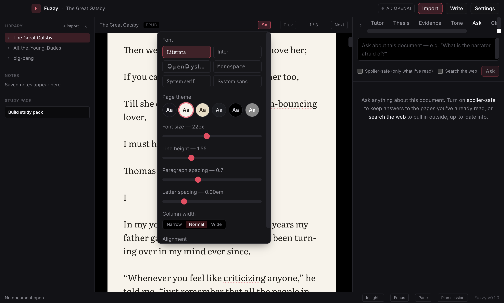
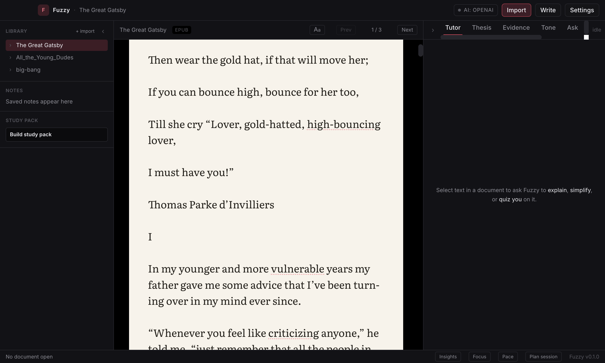

Ask in context
Highlight any passage and ask Fuzzy to explain, simplify, summarize, define, give an example, or quiz you.
Fuzzy is a Mac-native reading workspace where your books, papers, and PDFs become interactive. Ask questions in the margin, turn passages into notes, generate study packs, and stay inside the page.
macOS 13 Ventura or later · Free · No account required · Open source · Private by default
Highlight any passage and ask Fuzzy to explain, simplify, summarize, define, give an example, or quiz you.
Save explanations, insights, and important moments as margin notes attached to the exact text that made them matter.
Turn books, papers, PDFs, and documents into flashcards, quizzes, summaries, and key concepts from what you actually read.
Reading breaks when you hit a paragraph that refuses to make sense. Select a passage and ask Fuzzy to explain it, simplify it, summarize it, define key terms, give an example, or quiz you. No copying into ChatGPT. No losing your place. Just the page, finally talking back.

Fuzzy gives your reading a real home. Import PDFs, EPUBs, Word documents, Markdown, and text files into one calm library. Books render with thoughtful typography and reading themes. PDFs keep their original layout.

Your library should know more than where the file is stored. Fuzzy keeps documents, chapters, annotations, reading progress, study packs, and notes together, so you can return to the exact idea you were working through.

Reading is only half the work. Remembering is the other half. Fuzzy can turn a book, paper, or PDF into summaries, key concepts, flashcards, and quizzes so review starts from the source.
Sometimes the best tool is the one that disappears. Focus Mode clears the interface so the page can breathe. The WPM pacer guides your eyes at your chosen speed, helping you stop skipping lines and stay inside the rhythm of reading.
Not every session is a deep work session. Tell Fuzzy how much time you have, and it helps you decide what to deep read, what to skim, and what to review later.
Most notes become disconnected from the moment that created them. Fuzzy keeps annotations attached to the passage, page, and context they came from, so your thinking stays with the text.
The sentence finally clicks when the explanation stays beside the line that made you stop.
Fuzzy is early, free, and open source. It is for students tired of drowning in PDFs, researchers keeping up with papers, book lovers who want smarter notes, and builders who want reading tools that feel as good as coding tools.
Free to download. No account. No subscription.
Your library stays on your machine.